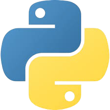
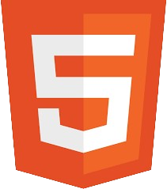

Habilidades
-

- 
-

- 
-

-
Olá! Meu nome é Thiago Victor e estou no 3º ano do curso técnico em Informática na Escola Profissional Luiza de Teodoro Vieira. Desde que entrei no mundo da tecnologia, venho desenvolvendo projetos e aprendendo de forma prática e constante, sempre com foco em me tornar um desenvolvedor full-stack.
Tenho experiência em linguagens como Java, JavaScript e Python, além de domínio em banco de dados com PostgreSQL. Já desenvolvi projetos como uma calculadora, um gerador de senhas fortes em Python e até um carrinho seguidor de linha que desvia de obstáculos, aplicando lógica de programação e eletrônica.
Atualmente, estou ampliando meu conhecimento com um curso de Cibersegurança do Google pela Coursera e já conquistei um certificado da Huawei Cloud Services. Estou sempre em busca de novos desafios que me ajudem a crescer como profissional e aprimorar minhas habilidades tanto no front-end quanto no back-end.
Sou comprometido, curioso e gosto de aprender com projetos reais. Meu objetivo é evoluir cada vez mais e contribuir para soluções que façam a diferença.
Relógio digital com atualização em tempo real.
00:00:00
Criação de um sistema de uma concessionária junto dos meus colegas,fizemos pensando em automatizar a venda,estoque e apresentação dos veiculos
Ver CódigoVocê pode me encontrar no GitHub ou LinkedIn.